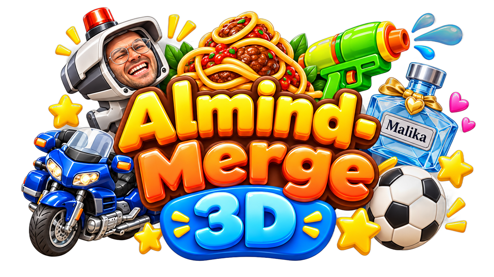

Villaen er åben · Webtest
En hel familie.
En ekstra dimension.
Placér brikken over gulvet, slip den og se to ens blive til én større. Kameraet kan drejes og zoomes, så du kan finde den helt rigtige plads.
Din spillerprofil
Henter spillerprofil…
Dette er en testversion. Din profil deles med de andre spil. Dine 3D-indstillinger følger med profilen, når du åbner spillet på en anden enhed. 3D-rekorder gemmes automatisk på din spillerprofil og har deres egen highscoreliste. Som gæst gemmes point kun lokalt. Første start henter en større spilpakke — brug gerne Wi-Fi. På telefon: træk med én finger og løft den for at slippe brikken.